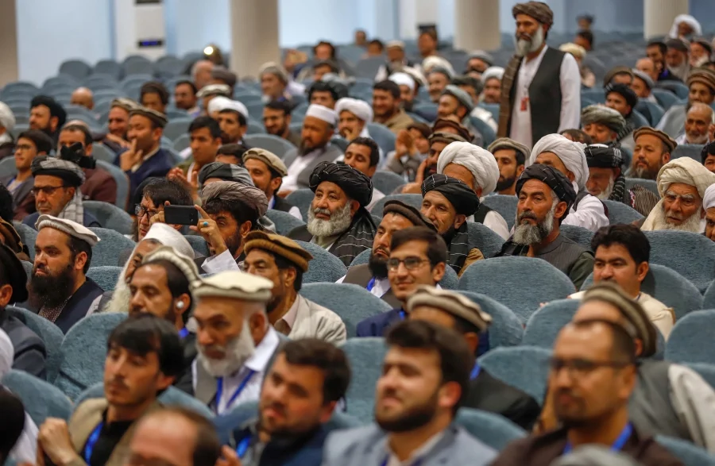

____
Люди
Численность населения - средняя,
Средняя продолжительность жизни — 44.8 - мужчины, 45.3 - женщины,
Языки — Государственные языки — пушту и дари. Нуристанский, белуджский, пашаи, туркменский, узбекский — региональные языки.
Религия - ислам суннитского толка.

История
Первая перепись населения Афганистана в 1979 году ознаменовала начало научной отчётности по населению. Однако впервые идея проведения переписи появилась в 1868—1879 году при Шир-Али из-за необходимости знать количество домашних хозяйств для прямого налогообложения. Впервые перепись была проведена в Кабуле в 1876 году, которая заодно зафиксировала национальность населения. Предполагается, что в то же время были проведены переписи населения в Kdhdāman и Kōhestān районах Кабульской области. Британская оккупация юго-восточного Афганистана позволила провести несколько переписей: в частности в Кандагаре 1880 года была проведена перепись населения по кварталам и полу, а главы британского диспансера в Кандагаре врачи Бреретон и Талли провели первое в Афганистане эпидемиологическое исследование и исследование уровня смертности.
В Кандагаре в 1891 году была проведена перепись населения, согласно которой в городе проживало 31 514 человек, из которых 16 064 мужчин и 15 450 женщин.
____